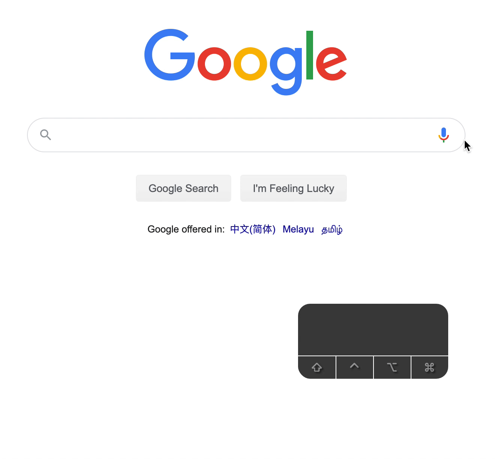
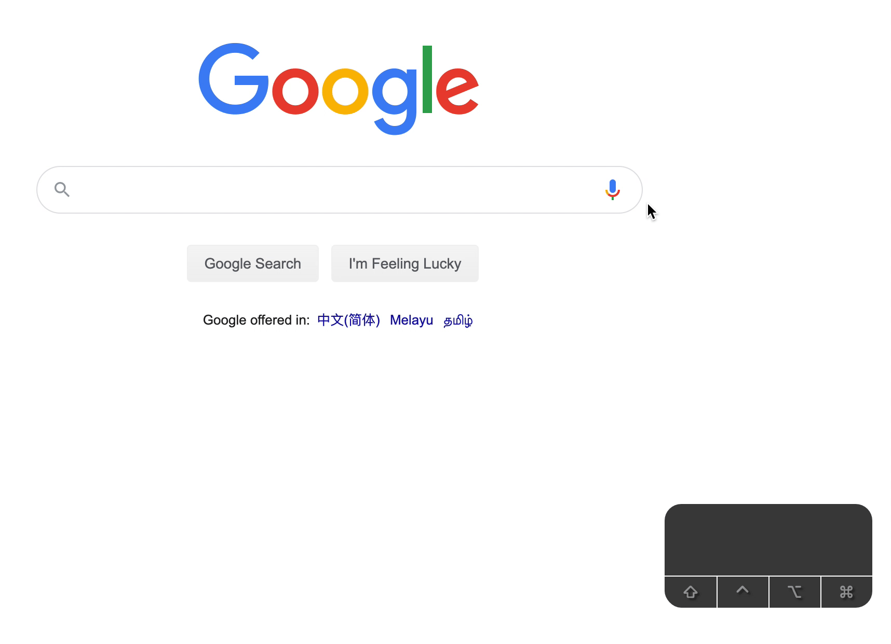

We want to let users select predictions from the list of predictions with arrow keys. This is how Google does it.

Highlighting a prediction
If you play around with Google, you’ll notice a few things.
First, if you press the Down on the input, Google’s Typeahead highlights the first prediction. If you press Up on the input, Google’s Typeahead highlights the last prediction.
At the same time, it replaces the input’s value with the prediction.

Notice the typing cursor remains on the input? This means focus remained on the input all the time.
To build this, we need to listen to a keydown event on the input element.
We only want to select a prediction if the user presses the Up or Down arrow key. Here, we’ll use an early return so we don’t have to indent the rest of the code.
If you press Down when a prediction is highlighted, Google selects the next prediction. The reverse is true. If you press Up when a prediction is highlighted, Google’s Typeahead selects the previous prediction.
Here, we need to check if we highlighted a prediction. We can check by finding the element with the is-highlighted class.
If you press Up from the first prediction, Google’s Typeahead reverts the input’s value back to what the user originally typed.
The same thing happens if you press Down from the last prediction.
From this, we can see that highlighting a prediction doesn’t necessarily mean “selecting” it. Rather, it means the user is considering selecting the prediction (and they can always revert back to what they typed).
To build this, we have to create a variable to store the value entered by the user. We’ll call this userEnteredValue. We have to put this value outside of the event listener.
let userEnteredValue
input.addEventListener('keydown', event => {
// ...
})
We want to save what the user typed into userEnteredValue when they highlight the first or last prediction with the keyboard.
let userEnteredValue
input.addEventListener('keydown', event => {
if (!currentPrediction) {
userEnteredValue = input.value.trim()
// ...
}
})
If the user press Up from the first prediction, we want to restore the original value.
(It’s okay to prevent the default behaviour of the Down arrow key as well. Why? Because the Down arrow key moves the cursor to the end of the text. And the cursor is already at the end of the text 😉).
We can use considerPrediction like this:
input.addEventListener('keydown', event => {
// ...
if (!currentPrediction) {
userEnteredValue = input.value.trim()
if (key === 'ArrowUp') {
considerPrediction(lastPrediction, event)
}
if (key === 'ArrowDown') {
considerPrediction(firstPrediction, event)
}
} else {
// ...
if (key === 'ArrowUp') {
const previousPrediction = currentPrediction.previousElementSibling
if (previousPrediction) {
considerPrediction(previousPrediction, event)
}
}
if (key === 'ArrowDown') {
const nextPrediction = currentPrediction.nextElementSibling
if (nextPrediction) {
considerPrediction(nextPrediction, event)
}
}
}
// ...
})
Pay attention to the last two sets. Notice we had to check if a prediction is truth before we use considerPrediction? We can throw this truthy check into considerPrediction.